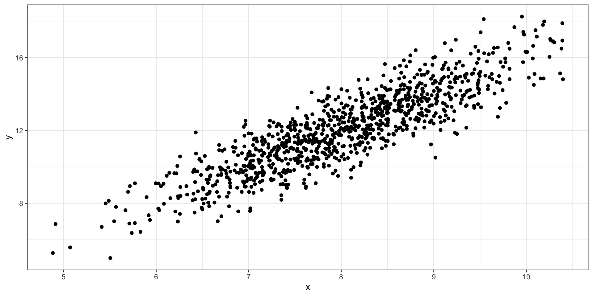
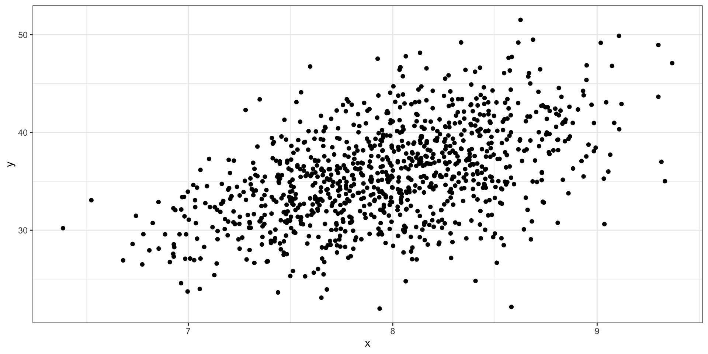
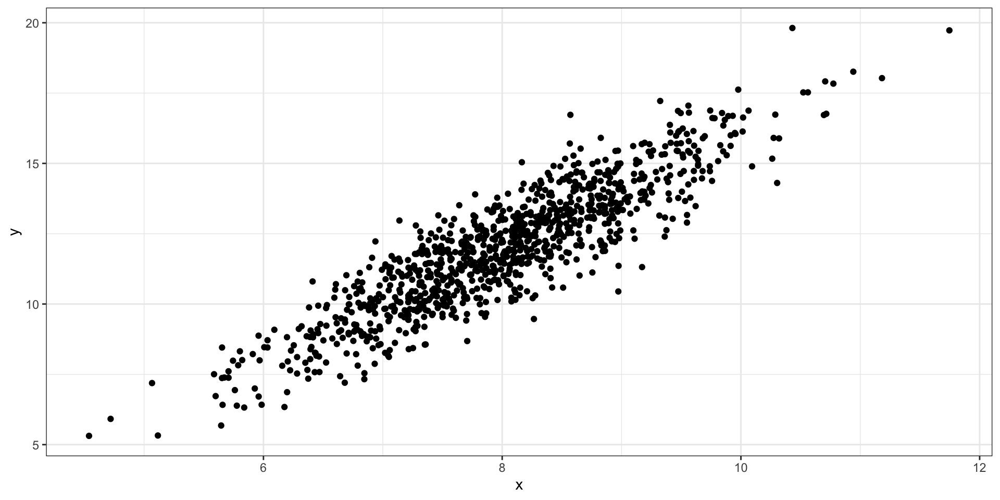
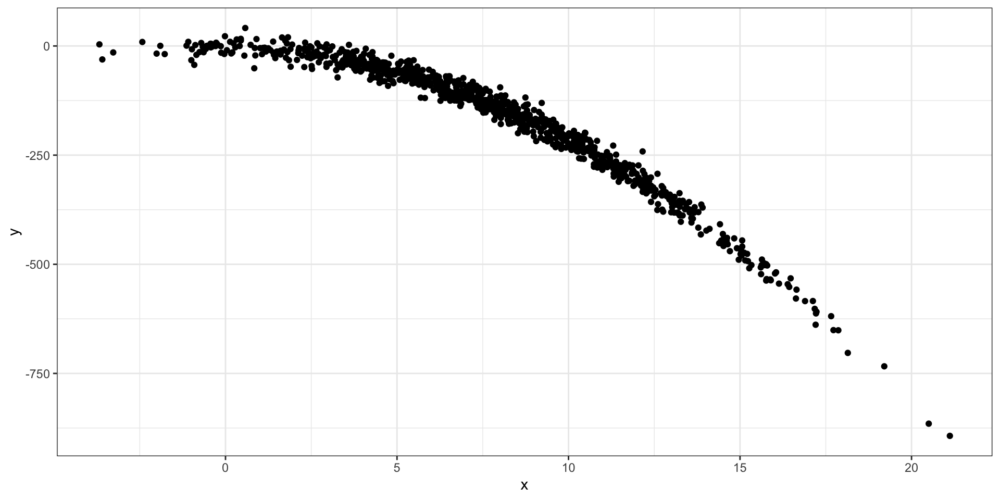
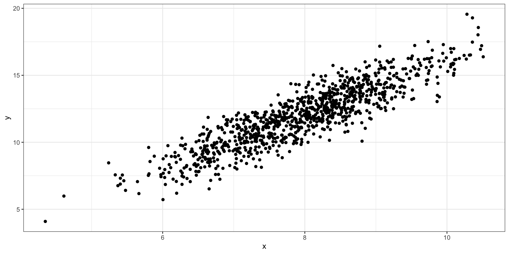

Residual Analysis
Learning Objective
- Model Assumptions
- Residual Analysis
- Multicollinearity
Model Assumptions
Model
\[ y = \beta_0 + \beta_1 x + \epsilon \]
- \(\epsilon \sim N(0,\sigma^2)\)
Model Scatter Plot

Model Assumptions
Errors are normally distributed
Constant Variance
Linearity
Independence
No outliers
Errors Normally Distributed
Constant Variance
Constant Variance
Linearity
Linearity
No Outliers
Residuals and Influential Measurements
Residuals
Residuals are the errors between the observed value and the estimated model. Common residuals include
Raw Residual
Standardized Residual
Jackknife (studentized) Residuals
Influential Measurements
Influential measures are statistics that determine how much a data point affects the model. Common influential measures are
Leverages
Cook’s Distance
Raw Residuals
\[ \hat r_i = y_i - \hat y_i \]
Leverages
\[ H = \boldsymbol X (\boldsymbol X^\mathrm T\boldsymbol X)^{-1}\boldsymbol X ^\mathrm T \]
\(\boldsymbol X\): design matrix
\(h_{ii} = H[i,i]\): leverage for \(i\)th value
Standardized Residuals
\[ \hat r^*_i = \frac{\hat r_i}{\sqrt{\hat\sigma^2(1-h_{ii})}} \]
\(\hat \sigma^2\): Estimated mean square error
\(h_{ii}\): Leverage of \(i\)th data point
Jackknife Residuals
\[ \hat r ^\prime_i = \frac{y_i - \hat y_{i(i)}}{\sqrt{\hat \sigma^2_{(i)}(1-h_{ii})}} \]
\(\hat y_{i(i)}\): fitted value for \(i\)th value from model fitted without \(i\)th data point
\(\hat\sigma^2_{(i)}\): mean square error from model fitted without \(i\)th data point
Cook’s Distance
\[ \hat d_i = \frac{(y_i - \hat y_{i})^2}{(k+1)\hat \sigma^2}\left\{\frac{h_{ii}}{(1-h_{ii})^2}\right\} \]
- \(k\): number of predictors
Residual Analysis
Residual Analysis
A residual analysis is used to test the assumptions of linear regression.
QQ Plot
A qq (quantile-quantile) plot will plot the estimated quantiles of the residuals against the theoretical quantiles from a normal distribution function. If the points from the qq-plot lie on the \(y=x\) line, it is said that the residuals follow a normal distribution.
Residual vs Fitted Plot
This plot allows you to assess the linearity, constant variance, and identify potential outliers. Create a scatter plot between the fitted values (x-axis) and the raw/standardized residuals (y-axis).
Residual vs X Plots
This plot helps identify issues with linearity and suggests potential solution. Create a scatter plot between raw/standardized residuals (y-axis) and the predictor variables (x-axis).
Outlier Plots
An outlier plot can tell you if there are any outliers in the data. Create a scatter plot between the index number (x-axis) and standardized/studentized residuals (y-axis)
Influential Observations Plots
Will identify outliers/observations that will have an affect on the model. Create a scatter plot between the index number (x-axis) and leverages/cook’s distance (y-axis).
Multicollinearity
Mulitcollinearity
Multicolinearity occurs when predictor variable have a correlation between each other. Collinearity between predictor variables with inflate the standard errors and cause problems with inference.
Variance Inflation Factor
The variance inflation factor is a measurement on how much variables are collinear with each other. A value greater than 10 is a cause for concern and action should be taken.
R Code
Fitting a model
#>
#> Call:
#> lm(formula = Petal.Length ~ Sepal.Length + Sepal.Width, data = iris)
#>
#> Residuals:
#> Min 1Q Median 3Q Max
#> -1.25582 -0.46922 -0.05741 0.45530 1.75599
#>
#> Coefficients:
#> Estimate Std. Error t value Pr(>|t|)
#> (Intercept) -2.52476 0.56344 -4.481 1.48e-05 ***
#> Sepal.Length 1.77559 0.06441 27.569 < 2e-16 ***
#> Sepal.Width -1.33862 0.12236 -10.940 < 2e-16 ***
#> ---
#> Signif. codes: 0 '***' 0.001 '**' 0.01 '*' 0.05 '.' 0.1 ' ' 1
#>
#> Residual standard error: 0.6465 on 147 degrees of freedom
#> Multiple R-squared: 0.8677, Adjusted R-squared: 0.8659
#> F-statistic: 482 on 2 and 147 DF, p-value: < 2.2e-16Data Prep
Residual vs Fitted
QQ Plot
Residuals vs X
Jackknife Residuals
Leverages
Cook’s Distance
Multicolinearity
Issues with Linearity
Simulation Study
Simulate 1000 random variables from the following model:
\[ Y = 3 + 2log(X_1) + \epsilon \]
\(X_1\sim N(8,1)\)
\(\epsilon\sim N(0, 2)\)
Fit Model
Fit a model between \(Y\) and \(X_1\).
- Fit Residuals Plots
Issues with Constant Variances
Simulation Study
Simulate 1000 random variables from the following model:
\[ Y = 3 + 2X_1 + \epsilon \]
\(X_1\sim N(8,1)\)
\(\epsilon\sim N(0,Y^2)\)
Fit Model
Fit a model between \(Y\) and \(X_1\).
- Fit Residuals Plots
Issues with Normality
Simulation Study
Simulate 1000 random variables from the following model:
\[ Y = 3 + 2X_1 + \epsilon \]
\(X_1\sim N(8,1)\)
\(\epsilon\sim Gamma(2, 1)\)
Fit Model
Fit a model between \(Y\) and \(X_1\).
- Fit Residuals Plots